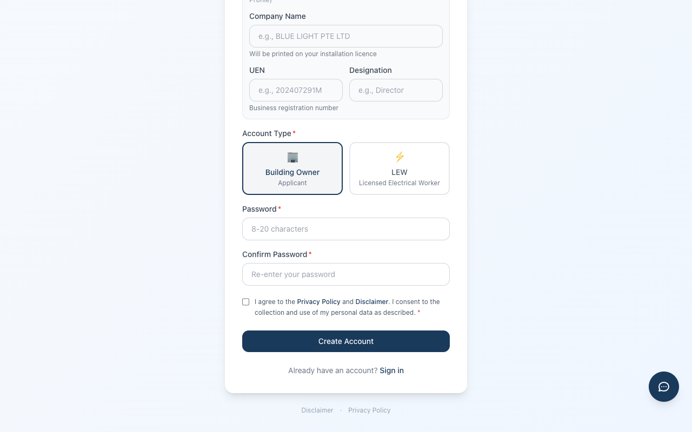
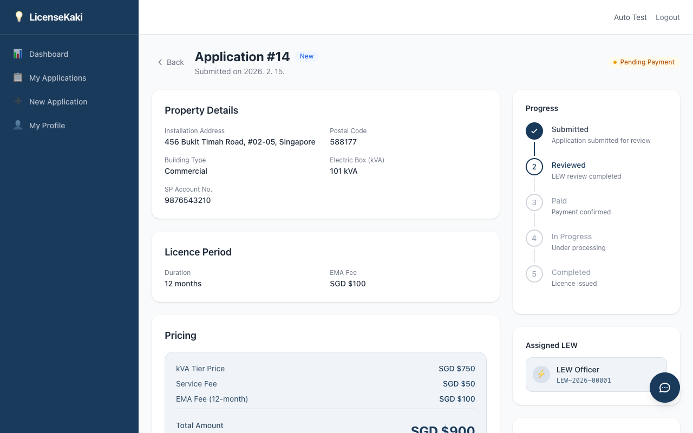

💡
LicenseKaki
싱가포르 전기 설비 면허 플랫폼
신청자 가이드
Version 3.0
2026년 2월
LicenseKaki Pte Ltd
목차
- 1. 시작하기
- 1.1 회원가입
- 1.2 로그인
- 1.3 비밀번호 찾기
- 1.4 이메일 인증 (활성화 시)
- 2. 대시보드
- 3. 새 신청서 작성
- 3.1 시작하기 전에
- 3.2 Step 1: 신청 유형 및 옵션
- 3.3 Step 2: 설치 주소
- 3.4 Step 3: kVA 및 가격
- 3.5 Step 4: 검토 및 제출
- 4. 내 신청 목록
- 5. 신청 상세 보기
- 5.1 신청 정보
- 5.2 위임장(LOA)
- 5.3 서류 및 SLD 요청
- 5.4 결제 정보
- 5.5 면허 정보 및 다운로드
- 6. 수정 요청 대응
- 7. 결제하기
- 8. 내 프로필
1. 시작하기
이 장에서는 LicenseKaki 플랫폼에 신청자(Building Owner)로 가입하고 로그인하는 방법을 안내합니다. 신청자는 싱가포르 전기 설비 면허를 신청하는 건물 소유자 또는 대리인입니다.
1.1 회원가입
LicenseKaki를 이용하려면 먼저 회원가입이 필요합니다. 아래 절차를 따라 신청자 계정을 생성하세요.
1
로그인 페이지에서 하단의 "Create account" 링크를 클릭합니다.

그림 1.1 — 회원가입 페이지 (신청자)
2
다음 정보를 입력합니다:
- Full Name — 실명 (영문 권장)
- Email — 로그인에 사용할 이메일 주소
- Phone Number — 연락 가능한 전화번호 (싱가포르 번호 권장)
- Company Name — 소속 회사명 (개인인 경우 본인 이름)
- UEN — 사업자등록번호 (Unique Entity Number)
- Designation — 직책 (예: Director, Owner, Manager)
- Correspondence Address — 연락처 주소 (우편물 수신 주소)
3
계정 유형(Account Type)에서 "Building Owner (Applicant)"를 선택합니다. 이 유형은 면허 신청 및 관리가 가능한 신청자 역할입니다.

그림 1.2 — 계정 유형 선택 및 PDPA 동의
4
비밀번호를 설정하고, 개인정보 처리 방침(PDPA)에 동의한 후 "Create Account" 버튼을 클릭합니다. 비밀번호는 영문, 숫자 포함 8자 이상이어야 합니다.
주의: 위임장(LOA)을 자동 생성하려면 프로필의 사업자 정보가 모두 입력되어 있어야 합니다. 회원가입 시 Full Name, Company Name, UEN, Designation, Correspondence Address를 빠짐없이 기재하세요. 누락된 정보가 있으면 이후 프로필 페이지에서 보완할 수 있습니다.
1.2 로그인
회원가입이 완료되면 로그인하여 플랫폼을 이용할 수 있습니다.

그림 1.3 — 로그인 페이지
1
LicenseKaki 로그인 페이지에 접속합니다.
2
가입 시 등록한 이메일 주소와 비밀번호를 입력합니다.
3
"Sign In" 버튼을 클릭합니다. 로그인에 성공하면 신청자 대시보드로 이동합니다.
참고: 보안을 위해 로그인 시도는 15분당 5회로 제한됩니다. 5회 연속 실패 시 일정 시간 후 다시 시도하세요.
1.3 비밀번호 찾기
비밀번호를 잊어버린 경우 이메일을 통해 재설정할 수 있습니다.

그림 1.4 — 비밀번호 찾기
1
로그인 페이지에서 "Forgot your password?" 링크를 클릭합니다.
2
가입 시 등록한 이메일 주소를 입력하고 "Send Reset Link" 버튼을 클릭합니다.
3
이메일 수신함을 확인합니다. 비밀번호 재설정 링크가 포함된 이메일이 발송됩니다. 링크는 1시간 동안 유효합니다.
4
이메일의 링크를 클릭하여 새 비밀번호를 설정합니다. 영문, 숫자 포함 8자 이상으로 입력하세요.
팁: 이메일이 도착하지 않으면 스팸/정크 메일함을 확인하세요. 그래도 없으면 잠시 후 다시 시도하거나 관리자에게 문의하세요.
1.4 이메일 인증 (활성화 시)
관리자가 이메일 인증 기능을 활성화한 경우, 회원가입 후 이메일 인증 절차가 추가됩니다.
1
회원가입 완료 후 등록한 이메일 주소로 인증 이메일이 발송됩니다.
2
이메일 수신함에서 인증 메일을 열고 "Verify Email" 버튼 또는 링크를 클릭합니다.
3
이메일 인증이 완료되면 로그인이 가능해집니다.
4
인증 이메일을 받지 못한 경우, 로그인 페이지에서 "Resend Verification Email" 링크를 통해 재발송할 수 있습니다.
참고: 인증 이메일이 도착하지 않으면 스팸 메일함을 확인하거나, 잠시 후 재발송을 시도하세요. 문제가 지속되면 관리자에게 문의하세요.
팁: 이메일 인증 기능은 관리자가 시스템 설정에서 활성화/비활성화할 수 있으며, 기본값은 비활성화 상태입니다. 비활성화 상태에서는 가입 즉시 로그인이 가능합니다.
2. 대시보드
로그인 후 가장 먼저 표시되는 화면이 신청자 대시보드입니다. 대시보드는 현재 신청 현황을 한눈에 파악할 수 있도록 요약 정보를 제공합니다.

그림 2.1 — 신청자 대시보드
주요 구성 요소
- 요약 카드 — 전체 신청 수, 진행 중인 신청, 완료된 신청, 결제 대기 등의 통계를 카드 형태로 보여줍니다.
- 최근 신청 목록 — 가장 최근에 작성하거나 업데이트된 신청서들이 목록으로 표시됩니다. 클릭하면 해당 신청의 상세 페이지로 이동합니다.
- New Application 버튼 — 새로운 면허 신청서를 작성하려면 이 버튼을 클릭합니다. 클릭 시 신청서 작성 마법사(Wizard)가 시작됩니다.
팁: 대시보드의 요약 카드를 클릭하면 해당 상태의 신청 목록으로 빠르게 이동할 수 있습니다.
3. 새 신청서 작성
새로운 전기 설비 면허를 신청하려면 4단계 마법사(Wizard)를 통해 신청서를 작성합니다. 각 단계에서 필요한 정보를 입력하고, 마지막 단계에서 검토 후 제출합니다.
| 단계 |
내용 |
설명 |
| Step 1 |
신청 유형 및 옵션 |
신규/갱신, 면허 기간, SLD 옵션 등 선택 |
| Step 2 |
설치 주소 |
전기 설비가 설치된 건물 주소 입력 |
| Step 3 |
kVA 및 가격 |
전기 용량 입력 및 가격 확인 |
| Step 4 |
검토 및 제출 |
입력 내용 최종 확인 후 제출 |
3.1 시작하기 전에
신청서 작성을 시작하면 먼저 안내 페이지가 표시됩니다. 이 페이지에서는 신청 절차와 준비 사항을 확인할 수 있습니다.

그림 3.1 — 시작하기 전에 안내 페이지
팁: 신청 전에 SP Group 계정이 있으면 설치 주소 및 kVA 정보를 쉽게 확인할 수 있습니다. SP Group 고객 번호 또는 계정 번호를 미리 준비하세요.
신청 절차 (5단계)
1
신청서 작성 — 4단계 마법사를 통해 신청 정보를 입력합니다.
2
관리자 검토 — 제출된 신청서를 관리자(Admin) 또는 LEW가 검토합니다.
3
서류 준비 — LOA 서명, SLD 업로드/요청 등 필요 서류를 준비합니다.
4
결제 — PayNow를 통해 서비스 비용을 결제합니다.
5
면허 발급 — EMA(에너지시장국)에서 면허가 발급되면 다운로드할 수 있습니다.
준비 서류 체크리스트
| 서류 |
필수 여부 |
설명 |
| SLD (Single Line Diagram) |
필수 |
전기 설비 단선도. 직접 업로드하거나 LEW에게 작성 요청 가능 |
| LOA (Letter of Authorization) |
필수 |
위임장. 신규 신청 시 시스템에서 자동 생성, 갱신 시 직접 업로드 |
| Breaker Box 사진 |
필수 |
분전함(브레이커 박스) 사진. 신청서 Step 1에서 업로드 |
팁: 서류를 미리 준비해두면 신청 절차를 더 빠르게 진행할 수 있습니다. 특히 SLD는 전문가(LEW)에게 요청하면 작성에 시간이 소요될 수 있으므로 미리 준비하는 것을 권장합니다.
주요 안내 사항
- SP Group 계정 번호 — 신규 신청 시 SP Group 계정 번호가 필요합니다. SP Group 전기 요금 고지서 또는 온라인 계정에서 확인할 수 있습니다.
- kVA (전기 용량) — 설비의 전기 용량을 정확히 입력해야 정확한 가격이 산출됩니다.
- 면허 기간 — 12개월 또는 3개월 중 선택 가능하며, 기간에 따라 가격이 달라집니다.
- EMA 수수료 — 서비스 비용 외에 EMA(에너지시장국) 수수료가 별도로 부과됩니다.
3.2 Step 1: 신청 유형 및 옵션
첫 번째 단계에서는 신청 유형, 면허 기간, 필수 서류 등을 선택합니다.

그림 3.2 — 신청 유형 선택
신청 유형 선택
| 유형 |
설명 |
비고 |
New Licence
(신규 면허) |
처음으로 전기 설비 면허를 신청하는 경우 |
모든 정보를 직접 입력 |
Licence Renewal
(면허 갱신) |
기존 면허를 갱신하는 경우 |
기존 면허 번호 입력 시 주소 등 자동 채움 |
참고: 면허 갱신(Renewal)을 선택하면 기존 면허 번호를 입력할 수 있으며, 이전 신청의 설치 주소 및 kVA 정보가 자동으로 채워집니다. 변경 사항이 있으면 수동으로 수정하세요.
SP Group 계정 (신규 면허만 해당)
신규 면허 신청 시 SP Group 계정 번호를 입력합니다. 이 번호는 전기 공급 계약 정보를 확인하는 데 사용됩니다.
- SP Group 전기 요금 고지서에서 계정 번호를 확인할 수 있습니다.
- 온라인: SP Group 웹사이트 또는 앱에서 계정 정보를 확인할 수 있습니다.
LOA 업로드 (갱신만 해당)
면허 갱신 시에는 LOA(위임장)를 직접 업로드해야 합니다.
| 신청 유형 |
LOA 처리 방식 |
| 신규 면허 (New Licence) |
시스템에서 LOA 자동 생성 (프로필 사업자 정보 기반) |
| 면허 갱신 (Licence Renewal) |
신청자가 LOA 파일을 직접 업로드 |

그림 3.3 — 면허 기간, 브레이커 박스 사진 및 SLD 옵션
면허 기간 선택
| 기간 |
기본 수수료 |
설명 |
| 12개월 |
$100 |
표준 면허 기간 (1년) |
| 3개월 |
$50 |
단기 면허 (임시 설비 등) |
브레이커 박스(Breaker Box) 사진 업로드
1
분전함(브레이커 박스)의 전면 사진을 촬영합니다. 브레이커의 용량 표시와 배선 상태가 잘 보이도록 촬영하세요.
2
"Upload Breaker Photo" 버튼을 클릭하여 사진 파일을 업로드합니다.
3
업로드된 사진이 미리보기로 표시됩니다. 사진이 불명확하면 삭제 후 다시 업로드하세요.
SLD(Single Line Diagram) 옵션
| 옵션 |
설명 |
비고 |
Upload Myself
(직접 업로드) |
이미 SLD 파일을 보유한 경우 직접 업로드합니다. |
PDF 또는 이미지 형식 지원 |
Request LEW to prepare
(LEW에게 요청) |
면허 전기 기술자(LEW)에게 SLD 작성을 요청합니다. |
LEW가 업로드 후 확인 가능 |
참고: SLD를 LEW에게 요청하면 신청 상세 페이지에서 요청 상태를 추적할 수 있습니다. LEW가 SLD를 업로드하면 알림을 받게 됩니다.
3.3 Step 2: 설치 주소
두 번째 단계에서는 전기 설비가 설치된 건물의 주소를 입력합니다.
입력 항목
- Block / House No. — 건물 번호
- Street Name — 도로명
- Unit No. — 호수 (해당하는 경우)
- Building Name — 건물명 (해당하는 경우)
- Postal Code — 우편번호 (6자리)
참고: 면허 갱신(Renewal)을 선택한 경우, 이전 신청의 설치 주소가 자동으로 채워집니다. 주소가 변경되었으면 직접 수정하세요. 주소가 동일하면 그대로 진행하시면 됩니다.
팁: 우편번호를 정확히 입력하면 EMA 면허 발급 시 주소 검증이 원활하게 진행됩니다.
3.4 Step 3: kVA 및 가격
세 번째 단계에서는 전기 설비의 용량(kVA)을 입력하고, 산출된 가격을 확인합니다.
1
설비의 전기 용량(kVA) 값을 입력합니다. SP Group 계약서 또는 브레이커 박스 표시에서 확인할 수 있습니다.
2
kVA 값을 입력하면 시스템이 자동으로 가격을 계산하여 표시합니다.
3
가격 내역을 확인합니다:
- 서비스 비용(Service Fee) — kVA 구간 및 면허 기간에 따른 비용
- EMA 수수료(EMA Fee) — 에너지시장국 면허 발급 수수료
- 합계(Total) — 서비스 비용 + EMA 수수료
참고: EMA 수수료는 정부 기관에서 징수하는 면허 발급 수수료로, 서비스 비용과는 별도로 부과됩니다. EMA 수수료는 kVA 용량에 관계없이 일정 금액입니다.
팁: 가격은 kVA 구간별로 다르게 책정됩니다. 정확한 가격표는 LicenseKaki 웹사이트의 가격 페이지에서 확인할 수 있습니다.
3.5 Step 4: 검토 및 제출
마지막 단계에서는 입력한 모든 정보를 최종 검토하고 신청서를 제출합니다.
검토 항목
- 신청 유형 — 신규 면허 / 면허 갱신
- 면허 기간 — 12개월 / 3개월
- 설치 주소 — 입력한 건물 주소
- kVA — 전기 용량
- 가격 내역 — 서비스 비용, EMA 수수료, 합계
- SLD 옵션 — 직접 업로드 / LEW 요청
- 브레이커 박스 사진 — 업로드 확인
- LOA — 갱신 시 업로드 확인
1
각 항목을 꼼꼼히 확인합니다. 수정이 필요한 항목이 있으면 "Previous" 버튼으로 해당 단계로 돌아갑니다.
2
모든 정보가 정확한지 확인한 후 "Submit Application" 버튼을 클릭합니다.
3
제출 확인 대화 상자가 나타나면 "Confirm"을 클릭합니다. 제출 후에는 신청 상세 페이지로 이동합니다.
주의: 신청서를 제출하면 Pending Review 상태가 되며, 관리자 검토가 시작됩니다. 제출 후에는 관리자가 수정 요청(Revision Request)을 보내기 전까지 내용을 변경할 수 없습니다.
팁: 제출 전에 모든 서류(브레이커 박스 사진, SLD, LOA)가 올바르게 업로드되었는지 반드시 확인하세요. 서류가 누락되면 관리자가 수정 요청을 보낼 수 있으며, 이 경우 절차가 지연됩니다.
4. 내 신청 목록
사이드바 메뉴의 "My Applications"를 클릭하면 자신이 제출한 모든 신청서를 목록으로 확인할 수 있습니다.

그림 4.1 — 내 신청 목록
목록 기능
- 검색(Search) — 신청 번호, 주소, 상태 등으로 검색할 수 있습니다.
- 상태 필터(Status Filter) — 특정 상태의 신청만 필터링하여 볼 수 있습니다. (예: Pending Review, Paid, In Progress 등)
- 페이지네이션(Pagination) — 신청이 많은 경우 페이지 단위로 나누어 표시됩니다.
목록 컬럼
| 컬럼 |
설명 |
| Application No. |
고유 신청 번호 |
| Type |
신규(New) / 갱신(Renewal) |
| Address |
설치 주소 |
| Status |
현재 진행 상태 |
| kVA |
전기 용량 |
| Created |
신청서 작성일 |
| Actions |
상세 보기 링크 |
팁: 목록에서 신청 행(row)을 클릭하면 해당 신청의 상세 페이지로 바로 이동합니다.
5. 신청 상세 보기
신청 목록에서 특정 신청을 선택하면 신청 상세 페이지로 이동합니다. 이 페이지에서는 신청의 모든 정보를 확인하고, 필요한 작업(서류 업로드, LOA 서명, 결제 등)을 수행할 수 있습니다.

그림 5.1 — 신청 상세 페이지 (상단)
페이지 레이아웃
신청 상세 페이지는 2-컬럼 레이아웃으로 구성되어 있습니다:
- 왼쪽 메인 영역 — 신청 정보, LOA, 서류, 결제 정보 등 주요 내용이 순서대로 표시됩니다.
- 오른쪽 사이드바 — 신청 상태 요약, 빠른 액션 버튼, 관련 링크 등이 표시됩니다.
5.1 신청 정보
신청 정보 섹션에서는 다음 항목을 확인할 수 있습니다:
- 상태 배너(Status Banner) — 현재 신청 상태가 색상과 함께 상단에 표시됩니다. 상태별 의미:
Pending Review — 관리자 검토 대기 중Revision Requested — 수정 요청됨 (신청자 조치 필요)Pending Payment — 결제 대기 중Paid — 결제 완료In Progress — 면허 발급 진행 중Completed — 완료 (면허 발급됨)Expired — 만료
- 설치 주소(Property Address) — 전기 설비가 설치된 건물의 전체 주소
- 면허 기간(Licence Period) — 선택한 면허 기간 (12개월 / 3개월)
- 갱신 정보(Renewal Details) — 갱신 신청인 경우 기존 면허 번호 및 이전 면허 만료일
- 가격 정보(Pricing) — 서비스 비용, EMA 수수료, 합계 금액
5.2 위임장(LOA)
LOA(Letter of Authorization, 위임장)는 건물 소유자가 LEW(면허 전기 기술자)에게 면허 신청을 위임하는 공식 문서입니다.
참고: LOA 처리 방식은 신청 유형에 따라 다릅니다:
- 신규 면허(New Licence) — 시스템이 프로필 사업자 정보를 기반으로 LOA를 자동 생성합니다. 신청자는 생성된 LOA를 확인하고 서명하면 됩니다.
- 면허 갱신(Renewal) — 신청자가 LOA 파일을 직접 업로드해야 합니다. Step 1에서 업로드하거나 상세 페이지에서 업로드할 수 있습니다.
LOA 상태
| 상태 |
설명 |
필요한 조치 |
| 미생성 / 미업로드 |
신규: LOA가 아직 생성되지 않음
갱신: LOA가 아직 업로드되지 않음 |
신규: 프로필 사업자 정보 완성 필요
갱신: LOA 파일 업로드 |
| 생성됨 / 업로드됨 (미서명) |
LOA가 준비되었으나 아직 서명되지 않음 |
LOA를 확인하고 전자 서명 진행 |
| 서명 완료 |
LOA에 전자 서명이 완료됨 |
추가 조치 불필요 |
주의: LOA에 전자 서명을 하면 되돌릴 수 없습니다. 서명 전에 LOA 내용(이름, 회사명, UEN, 직책, 주소 등)이 정확한지 반드시 확인하세요. 정보가 틀린 경우 프로필을 먼저 수정한 후 서명하세요.
팁: 면허 갱신 시 LOA는 Step 1에서 업로드하거나, 신청 상세 페이지의 LOA 섹션에서 업로드할 수 있습니다. 이미 서명된 LOA 파일을 갖고 있다면 바로 업로드하면 됩니다.
5.3 서류 및 SLD 요청

그림 5.4 — 서류 섹션
SLD 요청 상태
Step 1에서 "Request LEW to prepare"를 선택한 경우, SLD 요청의 진행 상태를 확인할 수 있습니다.
| 상태 |
설명 |
| Requested |
LEW에게 SLD 작성이 요청된 상태입니다. LEW가 작업을 시작할 때까지 대기합니다. |
| Uploaded |
LEW가 SLD를 업로드했습니다. 신청자가 업로드된 SLD를 확인할 수 있습니다. |
| Confirmed |
SLD가 최종 확인되었습니다. 더 이상 추가 조치가 필요하지 않습니다. |
서류 업로드
추가 서류가 필요한 경우 서류 섹션에서 직접 업로드할 수 있습니다.
1
서류 섹션에서 "Upload Document" 버튼을 클릭합니다.
2
서류 유형을 선택하고 파일을 업로드합니다. PDF 또는 이미지(JPG, PNG) 형식을 지원합니다.
3
업로드가 완료되면 서류 목록에 표시됩니다. 업로드된 서류를 클릭하여 미리볼 수 있습니다.
주의: EMA(에너지시장국)에 제출하는 서류는 정확하고 최신 정보를 포함해야 합니다. 잘못된 서류를 제출하면 면허 발급이 거부되거나 지연될 수 있습니다. 특히 SLD(단선도)는 실제 설비 구성과 정확히 일치해야 합니다.
5.4 결제 정보

그림 5.5 — 결제 정보
신청이 Pending Payment 상태가 되면 결제 정보 섹션이 활성화됩니다.
결제 정보 구성
- 결제 금액(Payment Amount) — 서비스 비용 + EMA 수수료의 합계 금액
- PayNow 정보 — 결제에 사용할 PayNow 수신 정보 (UEN 또는 QR 코드)
- QR 코드 — 모바일 뱅킹 앱으로 스캔하여 간편 결제 가능
- 결제 내역(Payment History) — 이전 결제 시도 및 완료된 결제 기록
- 영수증 다운로드 — 결제 완료 후 영수증(Receipt)을 PDF로 다운로드할 수 있습니다.

그림 5.6 — 서류, 결제 및 사이드바
참고: 결제 방법에 대한 자세한 안내는 7. 결제하기 섹션을 참고하세요.
5.5 면허 정보 및 다운로드
신청이 Completed 상태가 되면 발급된 면허 정보를 확인하고 다운로드할 수 있습니다.
면허 정보 항목
- 면허 번호(Licence Number) — EMA에서 발급한 고유 면허 번호
- 면허 만료일(Expiry Date) — 면허 유효 기간의 종료일. 만료 전에 갱신 신청이 필요합니다.
- 면허 다운로드 — "Download Licence" 버튼을 클릭하여 면허 문서를 PDF 파일로 다운로드할 수 있습니다.
팁: 면허 만료일이 다가오면 미리 갱신 신청을 준비하세요. 면허가 만료되면 전기 설비를 합법적으로 운영할 수 없으며, 새로운 면허를 다시 발급받아야 합니다. 면허 만료 30일 전에 갱신 신청을 시작하는 것을 권장합니다.
6. 수정 요청 대응
관리자(Admin) 또는 LEW가 신청서를 검토한 후 수정 요청(Revision Request)을 보낼 수 있습니다. 수정 요청을 받으면 신청 상태가 Revision Requested로 변경되며, 지정된 항목을 수정한 후 재제출해야 합니다.
수정 요청 대응 절차
1
대시보드 또는 신청 목록에서 Revision Requested 상태의 신청을 확인합니다. 해당 신청을 클릭하여 상세 페이지로 이동합니다.
2
상세 페이지 상단의 수정 요청 사유(Revision Notes)를 확인합니다. 관리자가 어떤 항목을 수정해야 하는지 구체적으로 안내합니다. (예: "SLD 파일이 불명확합니다. 고해상도 파일로 재업로드해주세요.", "설치 주소의 우편번호를 확인해주세요." 등)
3
"Edit Application" 버튼을 클릭하여 수정 모드로 전환합니다. 수정이 필요한 항목을 변경하거나 서류를 재업로드합니다.
4
수정이 완료되면 "Resubmit" 버튼을 클릭하여 재제출합니다. 신청 상태가 다시 Pending Review로 변경되어 관리자 재검토가 시작됩니다.
팁: 수정 도중에 작업을 취소하려면 "Cancel Edit" 버튼을 클릭하면 수정 전 상태로 돌아갑니다. 수정 요청 사유를 정확히 파악한 후 한 번에 모든 항목을 수정하여 재제출하면 처리 시간을 단축할 수 있습니다.
주의: 수정 요청에 신속히 대응하지 않으면 신청 처리가 지연될 수 있습니다. 수정 요청을 받으면 가능한 빨리 확인하고 대응하세요.
7. 결제하기
관리자가 신청서를 승인하면 신청 상태가 Pending Payment로 변경됩니다. 이때 PayNow를 통해 결제를 진행합니다.
PayNow 결제 절차
1
신청 상세 페이지의 결제 정보 섹션에서 결제 금액과 PayNow QR 코드를 확인합니다.
2
모바일 뱅킹 앱(DBS, OCBC, UOB 등)을 열고 PayNow 기능으로 이동합니다.
3
화면에 표시된 QR 코드를 스캔하거나, PayNow UEN을 직접 입력합니다.
5
결제가 확인되면 신청 상태가 Paid로 변경됩니다. 관리자가 결제를 확인한 후 면허 발급 절차가 진행됩니다.
주의: 결제 기한을 초과하면 신청이 만료(Expired)될 수 있습니다. 결제 대기 상태가 되면 가능한 빨리 결제를 완료하세요. 결제 기한은 신청 상세 페이지에서 확인할 수 있습니다.
참고: EMA 수수료는 서비스 비용에 포함되어 있으며, 별도로 EMA에 직접 납부할 필요는 없습니다. LicenseKaki가 대행하여 EMA에 수수료를 납부합니다.
팁: PayNow 결제가 완료되면 결제 확인까지 영업일 기준 1~2일이 소요될 수 있습니다. 결제 완료 후 영수증(Receipt)이 자동 생성되며, 신청 상세 페이지에서 다운로드할 수 있습니다.
8. 내 프로필
사이드바 메뉴의 "My Profile"을 클릭하면 프로필 관리 페이지로 이동합니다. 여기에서 개인 정보, 사업자 정보, 비밀번호를 관리할 수 있습니다.

그림 8.1 — 내 프로필 페이지
개인 정보 (Personal Information)
- Full Name — 실명
- Email — 로그인 이메일 주소 (변경 불가)
- Phone Number — 연락처 전화번호
사업자 정보 (Business Information)
- Company Name — 회사명
- UEN — 사업자등록번호 (Unique Entity Number)
- Designation — 직책
연락처 주소 (Correspondence Address)
- Block / House No. — 건물 번호
- Street Name — 도로명
- Unit No. — 호수
- Building Name — 건물명
- Postal Code — 우편번호

그림 8.2 — 사업자 정보 및 비밀번호 변경
비밀번호 변경
프로필 페이지 하단에서 비밀번호를 변경할 수 있습니다.
- Current Password — 현재 비밀번호 입력
- New Password — 새 비밀번호 입력 (영문, 숫자 포함 8자 이상)
- Confirm New Password — 새 비밀번호 재입력
입력 후 "Change Password" 버튼을 클릭하면 비밀번호가 변경됩니다.
주의: LOA(위임장) 자동 생성 시 프로필의 사업자 정보가 사용됩니다. Full Name, Company Name, UEN, Designation, Correspondence Address가 모두 입력되어 있어야 LOA가 정상적으로 생성됩니다. 정보가 누락되면 LOA 생성이 실패하므로, 신청 전에 프로필을 반드시 완성하세요.
팁: 프로필 정보를 변경하면 이후 새로 생성되는 LOA에 변경된 정보가 반영됩니다. 이미 생성되어 서명된 LOA에는 영향을 주지 않습니다.
— 신청자 가이드 끝 —
© 2026 LicenseKaki Pte Ltd. All rights reserved.